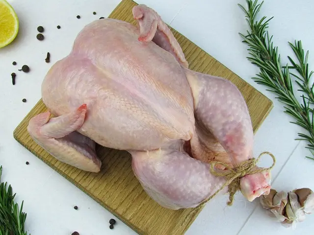

The Poultry Tip Site
The Poultry Tip SiteHow Much Feed Do Your Broilers Need?
To get a bird to a target weight, plan on feeding it roughly 1.8 to 2 times that weight in feed.
This page shows you how to turn that rule into a number of bags for your own flock. The figures are planning estimates. Your actual feed use depends on your strain, feed, health, weather and management, so adjust them with your own records.
How to Estimate Feed for Your Flock
The key idea is the feed-conversion ratio (FCR): the kilograms of feed a bird eats for each kilogram of live weight it gains. An FCR of 2.0 means 2 kg of feed for every 1 kg of growth. This is where the old rule "feed needed is double the target weight" comes from.
Use these three steps:
- Feed per bird (kg) = target live weight × FCR
- Total feed (kg) = feed per bird × number of birds
- Bags needed = total feed ÷ weight of one bag
Which FCR should you use? Well-managed flocks of good strains can reach about 1.6 to 1.8 by 5 to 6 weeks. Many small farms see 1.8 to 2.0 or higher, especially when birds are kept longer, because FCR gets worse as birds age. For planning, use 1.8 to 2.0, then replace it with your own figure after your first batch.
Most broiler feed comes in 25 kg bags (a few come in 50 kg). Always check the weight printed on the bag.
Live Weight vs Dressed Weight
Live weight is what the bird weighs on the scale before slaughter. Dressed weight (carcass weight) is the weight after the feathers, blood, head, feet and insides are removed. A dressed bird weighs less than a live one. A typical dressing yield is around 70 to 75%, but it varies.
FCR is based on live weight, so always convert first:
So a customer who wants a 3 kg dressed bird needs you to grow it to about 4 to 4.3 kg live. That takes noticeably more feed than growing a 3 kg live bird.

Quick Reference Table
| Target live weight | Feed per bird | Bags for 50 birds | Bags for 100 birds |
|---|---|---|---|
| 2.0 kg | 3.6 kg | 7.2 | 14.4 |
| 2.5 kg | 4.5 kg | 9.0 | 18.0 |
| 3.0 kg | 5.4 kg | 10.8 | 21.6 |
| 3.5 kg | 6.3 kg | 12.6 | 25.2 |
Based on 25 kg bags. At an FCR of 2.0, add about 11%. For example, 50 birds at 3.0 kg live weight need about 12 bags instead of 10.8. Always round up.
Worked Example
Mr Aniekeme has 50 birds and wants to sell dressed birds of 3 kg.
- Convert to live weight, assuming 72% dressing yield: 3 ÷ 0.72 ≈ 4.2 kg live.
- Choose a planning FCR of 1.9: 4.2 × 1.9 ≈ 8 kg of feed per bird.
- Total for the flock: 8 × 50 = 400 kg.
- Divide by the bag weight: 400 ÷ 25 = 16 bags.
- Add roughly 5% for spillage and spoilage: he should budget for about 17 bags.
If Mr Aniekeme loses some birds, he will use less feed, but he will also have fewer birds to sell. Plan for the number you place, then adjust as the flock goes on.
Early weeks: in the first two weeks, 50 chicks eat roughly one bag between them. Intake rises quickly after that, so later bags go much faster. Do not use the early-week rate to predict the rest of the cycle.
Getting Birds to a Similar Weight
It is hard to get every bird to the same weight, because some birds eat more than others. A flock with very uneven weights is harder to sell and wastes feed. These steps help:
- Lighting in the first two weeks: chicks are fed freely (ad libitum, meaning feed is always available). Keep lighting good so all of them eat at the same time, not just a few.
- Enough heat during brooding: warm chicks can focus on eating instead of trying to keep warm.
- Separate bullies: move aggressive or very large birds away from those they push off the feeder.
- Separate sick birds: isolate sick birds and feed them apart from the healthy ones, especially when only a few are affected.
- Handle stunted birds separately: keep them in their own pen so they can eat without competition. If you use any growth booster or medicine, follow the label and observe the withdrawal period (the time you must wait before the meat is safe to eat). Ask a vet if unsure.
- Use the right feed: choose good-quality feed suited to the age and stage of the birds.
- Treat disease early: sick birds eat less and convert feed poorly.
- Give enough feeder space so every bird can eat at the same time.
Keep Records and Reduce Waste
Your own records are the best guide for your next batch. Write down:
- the number of birds placed, the date, and any deaths each week;
- the feed type and number of bags used;
- the average weight of a sample of birds each week;
- the final live weight and the date you sold.
At the end of the batch, divide total feed used by total live weight sold. That is your real FCR, and you can use it in the formula next time.
To cut waste:
- Set feeders at the height of the birds' backs and do not overfill them.
- Keep feed dry and away from rodents. Throw away wet or mouldy feed.
- Fix leaking drinkers so the litter stays dry.
- Follow the feed manufacturer's guide for each growth stage.
Sudden drops in feed intake often signal heat stress, poor ventilation or disease. If you are unsure what is wrong, consult a poultry vet or extension officer.